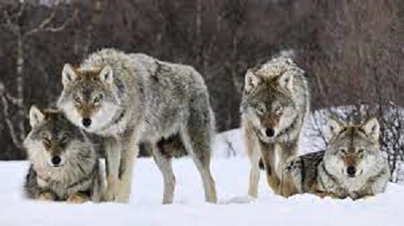

Aunque la acción del hombre ha disminuido enormemente su territorio, todavía es uno de los depredadores más habituales del hemisferio norte. De vez en cuando se registran ataques, pero estos apenas llegan a unos cientos en las últimas décadas. El término "lobo" deriva del latín lupus, con el mismo significado. En zoología se usa también para definir una especie de pez teleósteo de doce centímetros de largo, un pez selacio de dos metros de longitud, para el mamífero similar a la foca, si se añade el adjetivo "marino", y para el lince, si se añade el adjetivo "cerval". También designa una máquina usada en hilandería para el trabajo del algodón y como sinónimo de embriaguez (en desuso). En Perú se usa como sinónimo de astuto.6 Se habla de un "lobo de mar" para referirse a un marinero experimentado mientras que, cuando se dice que un grupo de personas son "lobos de una camada", lo que significa en realidad es que comparten intereses comunes que les llevan a mantener una relación cordial.7 Por otra parte, en latín el término lupa ‘loba’ se usaba para calificar a las rameras. De hecho, según Tito Livio, es posible que la historia de la loba Luperca fuera usada para encubrir a una prostituta.
El lobo (Canis lupus) es una especie de mamífero placentario del orden de los carnívoros. El perro doméstico (Canis familiaris) se consideraba miembro de la misma especie según distintos indicios, la secuencia del ADN y otros estudios genéticos.2 Hoy en día se considera una especie distinta.El primer registro fósil data de hace ochocientos mil años. Antaño los lobos fueron abundantes y se distribuían por Norteamérica y Eurasia. Actualmente, por una serie de razones relacionadas con el hombre, los lobos habitan únicamente en una muy limitada porción del que antes fue su territorio. Aunque está clasificada como una especie poco amenazada de extinción en algunas regiones, incluyendo la parte continental de los Estados Unidos de América, la especie está listada como en peligro o amenazada. Los lobos son cazados en muchas áreas del mundo por la amenaza que representan para el ganado, así como por deporte.
